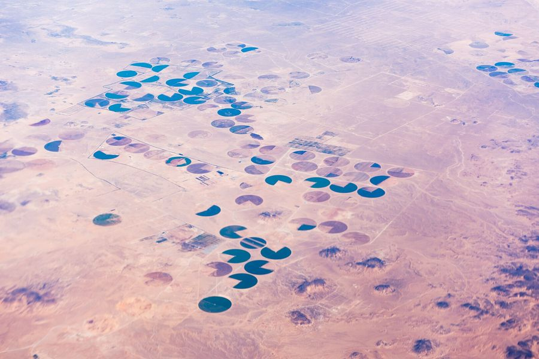

One short definition each. These are the words every process page and every Knowledge Base page uses, so they mean the same thing everywhere on this site.
| Term | What it means |
|---|---|
| Tenant | One customer account. Its own data, its own users, separate from every other tenant. |
| Farm | A named boundary. Imagery and weather subscriptions attach here, not to blocks. |
| Block | A managed area inside a farm. It carries the crop, the plan and the responsible person. |
| Grid cell | A fixed size square inside a block, used to see variation within the block. Cell size is set once per farm. |
| Land unit | An area that is not crop: a road, a building, a canal. Excluded from crop numbers. |
| Farm surface | Whole farm imagery. At the boundary a pixel counts only if its centre falls inside the farm. |
| Term | What it means |
|---|---|
| Pass | One satellite acquisition over the farm on one date. A chart point is a pass, not a day. |
| Index | A number computed from satellite bands, for example NDVI. Twelve ship seeded. |
| Aggregate | The mean, minimum, maximum and percentiles of an index over a block or a cell, per pass. |
| Baseline | What this block usually reads at this time of year. An anomaly is measured against it. |
| Weather derived signal | A daily number computed from the weather feed, for example ET₀ or growing degree days. |
| Forecast | Weather days after today. Marked as forecast and excluded from baselines and summaries. |
| Signal | A value recorded in the field or imported from a laboratory, on a block, on a date. |
| Term | What it means |
|---|---|
| Decision tree | A versioned flow of nodes that reads data and opens recommendations or alerts. |
| Condition source | What a condition may read: an index, a weather value, a field signal, the crop stage, or a block attribute. |
| Parameter | A named threshold with a default, declared by the tree author and changeable per tenant. |
| Scope | Whether the tree runs once per block or once per grid cell. |
| Dry run | Running a draft against real data without opening anything. |
| Evaluation trace | The stored record of why a tree fired or did not fire on a block. |
| Term | What it means |
|---|---|
| Recommendation | A dated suggested action on a block or a cell, with the reason it opened. |
| Alert | A dated warning that needs attention. Same origin as a recommendation. |
| Action horizon | How soon the action is due. Four horizons, from immediate to seasonal. |
| Dispatch | Sending an item to a worker or a scout, in the app and as a push notice. |
| Visit | A scouting job on a block, with a form to fill and photographs to attach. |
| Plan and activity | The season calendar for a block, and the jobs on it. |
| Term | What it means |
|---|---|
| Crop path | A dotted name such as mango.sukkary. A rule can target any level of it. |
| Variety | The cultivar planted on a block. It can carry its own plan template. |
| Growth stage | Where the crop is in its cycle today, from the phenology model. |
| Crop attribute | A field recorded once at establishment, for example rootstock or seed grade. |
| Size class | Small, medium or large canopy, used for tree crops. |
| Growing degree day | A daily heat sum above a base temperature, used to track development. |
| Term | What it means |
|---|---|
| Membership and role | A user's place in a tenant, and what they are allowed to do. |
| Capability | One single permission, for example open a recommendation. A role is a set of them. |
| Farm scope | Limiting a member to named farms. |
| Resource | A person or a machine on the farm roster that work can be given to. |
| Platform admin | Operates AgriPulse across tenants: catalogs, defaults, backfills, Observer. |
Support
Three channels beside the documentation. All three pages are placeholders for now and will be designed next.